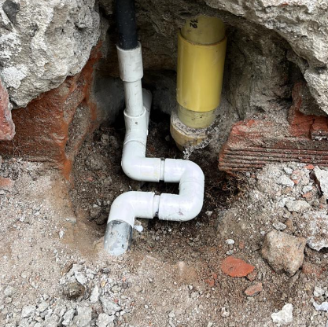
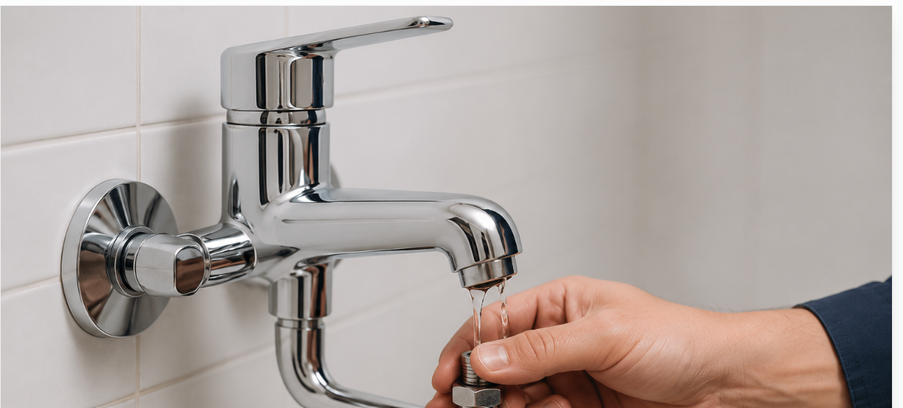
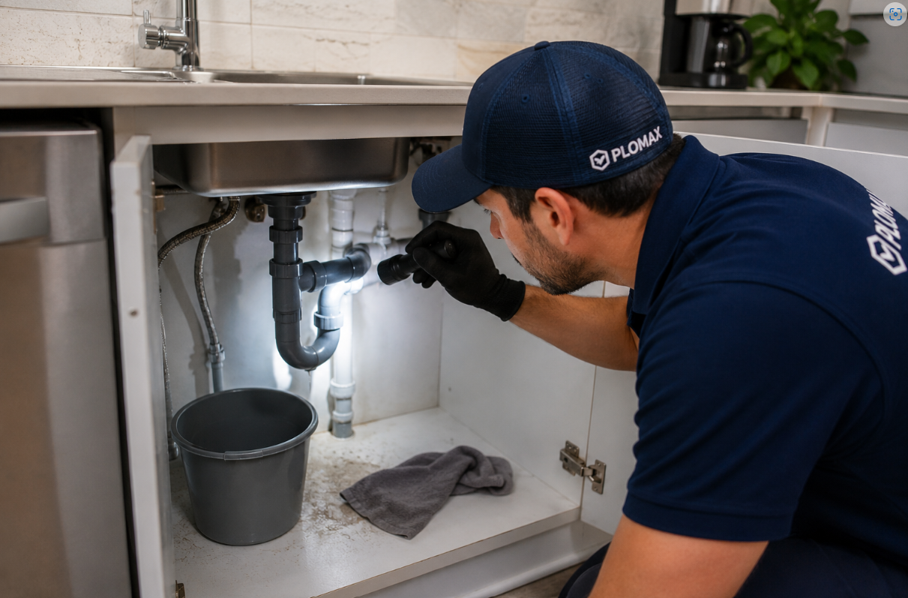

Reparación de tuberías
Solucionamos fugas y daños en tuberías utilizando materiales de alta calidad y personal capacitado.
Más informaciónEn PLOMAX ofrecemos servicios de plomería 24 horas en Medellín y el Área Metropolitana. Somos especialistas en destape de tuberías sin romper, reparación de fugas de agua, instalación y cambio de grifería y mantenimiento hidráulico, con atención rápida, personal calificado y servicio garantizado..

Solucionamos fugas y daños en tuberías utilizando materiales de alta calidad y personal capacitado.
Más información
Instalamos y cambiamos grifería para cocinas, baños y espacios comerciales.
Más información
Detectamos y reparamos fugas de agua para evitar daños y desperdicios.
Más informaciónEliminamos obstrucciones en tuberías, lavaplatos, sanitarios y desagües sin romper pisos ni paredes, utilizando maquinaria profesional.
Más informaciónDisponibles todos los días del año, a cualquier hora.
Respuesta inmediata para resolver tu emergencia.
Calidad garantizada en cada servicio que realizamos.
Cubrimos toda el área metropolitana.
Nuestro equipo está disponible las 24 horas para atender cualquier emergencia de plomería.
Escríbenos por WhatsApp 301 638 3157Todos los días del año
Llegamos rápido donde nos necesites